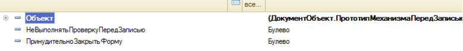
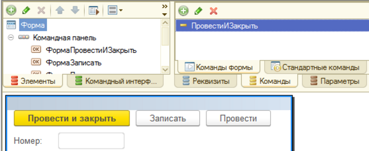
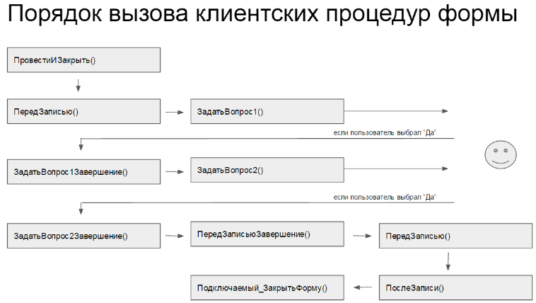
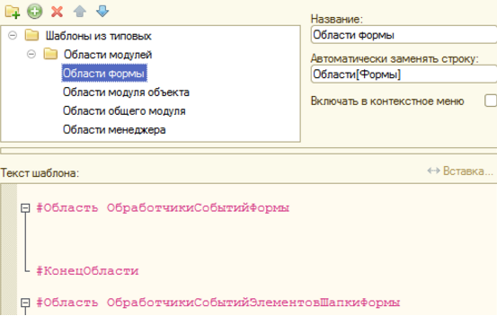
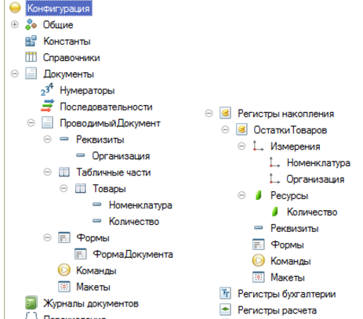
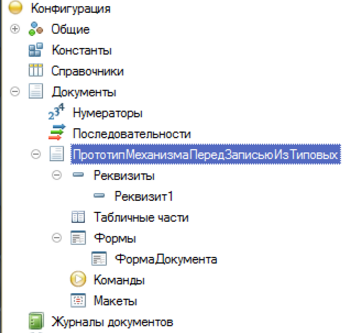

Предлагаю несколько каркасов для создания новых объектов в типовых конфигурациях. Это выжимка из кода нескольких конфигураций, которая позволит быстро и красиво создавать и дорабатывать объекты метаданных с соблюдением идеологии исходной системы
1. Шаблон областей для модулей объектов, менеджеров, форм
Как многие знают, в типовых конфигурациях код модулей разделен на секции. Это помогает проще ориентироваться в коде. Я проанализировал различные объекты типовых конфигураций и создал заготовки для :
модуля формы
модуля объекта
модуля менеджера объекта
общего модуля
Замечание: конструкция #Область ИмяОбласти доступна под платформой 8.3, начиная с режима совместимости 8.2
Модуль формы
#Область ОбработчикиСобытийФормы
#КонецОбласти
#Область ОбработчикиСобытийЭлементовШапкиФормы
#КонецОбласти
#Область ОбработчикиСобытийЭлементовТаблицыФормы_ИмяТаблицы
#КонецОбласти
#Область ОбработчикиКомандФормы
#КонецОбласти
#Область СлужебныеПроцедурыИФункции
#КонецОбласти
Модуль объекта
#Если Сервер Или ТолстыйКлиентОбычноеПриложение Или ВнешнееСоединение Тогда
#Область ПрограммныйИнтерфейс
#КонецОбласти
#Область ОбработчикиСобытий
#КонецОбласти
#Область СлужебныеПроцедурыИФункции
#КонецОбласти
#КонецЕсли
Модуль менеджера
#Если Сервер Или ТолстыйКлиентОбычноеПриложение Или ВнешнееСоединение Тогда
#Область ПрограммныйИнтерфейс
#КонецОбласти
#Область СлужебныйПрограммныйИнтерфейс
#КонецОбласти
#Область СлужебныеПроцедурыИФункции
#КонецОбласти
#КонецЕсли
Общий модуль
2. Шаблон проведения
Данная схема проверена на практике множество раз. Она понятная и расширяемая. Применяется практически для всех типовых документов.
В модуле объекта заполняем два обработчика
Модуль объекта документа
В модуле менеджера выполняем заполнение движений следующим образом
Модуль менеджера документа
Хочу отметить, что в приведенной схеме сначала табличная часть считывается во временную таблицу, а затем при заполнении движений используется уже эта временная таблица. С одной стороны это исключает повторные обращения к постоянной таблице БД, с другой стороны предоставляет дополнительные удобства (например, можно добавить служебные поля, которые потом использовать).
Кроме того, такая схема хорошо подходит при использовании автоматизированного тестирования (TDD).
3. Шаблон управляемой формы документа, в котором перед проведением требуется задавать вопросы пользователю с запретом модальных вызовов
В типовой конфигурации у формы такого документа есть два служебных реквизита:

Также добавляется служебная команда

В
Модуль формы документа (команды)
Обработчики ПередЗаписью() и ПослеЗаписи() выглядит примерно так:
Модуль формы документа (обработчики событий)
&НаКлиенте
Процедура ПередЗаписью(Отказ, ПараметрыЗаписи)
Если НеВыполнятьПроверкуПередЗаписью Тогда
НеВыполнятьПроверкуПередЗаписью = Ложь;
Возврат;
КонецЕсли;
Если ПараметрыЗаписи.РежимЗаписи = РежимЗаписиДокумента.Проведение Тогда
Отказ = Истина;
ЗадатьВопрос1(ПараметрыЗаписи);
КонецЕсли;
КонецПроцедуры
&НаКлиенте
Процедура ПослеЗаписи(ПараметрыЗаписи)
ОбщегоНазначения.ВыполнитьДействияПослеЗаписи(ЭтаФорма, Объект, ПараметрыЗаписи);
КонецПроцедуры
&НаКлиенте
Процедура ПередЗакрытием(Отказ, СтандартнаяОбработка)
ПринудительноЗакрытьФорму = Истина;
КонецПроцедуры
Кроме того, добавляется служебная процедура Подключаемый_ЗакрытьФорму(), т.к. закрытие формы в типовых выполняется через обработчик ожидания, который выставляется после записи.
Модуль формы документа
&НаКлиенте
Процедура Подключаемый_ЗакрытьФорму()
Закрыть();
КонецПроцедуры
Дальше пишем наш код с проверками. Не забываем обработчики завершения делать экспортными. Я проверки написал так:
Модуль формы документа
&НаКлиенте
Процедура ЗадатьВопрос1(ПараметрыЗаписи)
Оповещение = Новый ОписаниеОповещения("ЗадатьВопрос1Завершение", ЭтаФорма, ПараметрыЗаписи);
ТекстВопроса = "Какой-то вопрос 1 ?";
ПоказатьВопрос(Оповещение, ТекстВопроса, РежимДиалогаВопрос.ДаНет);
КонецПроцедуры
&НаКлиенте
Процедура ЗадатьВопрос1Завершение(Результат, ПараметрыЗаписи) Экспорт
Если Результат = КодВозвратаДиалога.Да Тогда
ЗадатьВопрос2(ПараметрыЗаписи);
КонецЕсли;
КонецПроцедуры
&НаКлиенте
Процедура ЗадатьВопрос2(ПараметрыЗаписи)
Оповещение = Новый ОписаниеОповещения("ЗадатьВопрос2Завершение", ЭтаФорма, ПараметрыЗаписи);
ТекстВопроса = "Какой-то вопрос 2 ?";
ПоказатьВопрос(Оповещение, ТекстВопроса, РежимДиалогаВопрос.ДаНет);
КонецПроцедуры
&НаКлиенте
Процедура ЗадатьВопрос2Завершение(Результат, ПараметрыЗаписи) Экспорт
Если Результат = КодВозвратаДиалога.Да Тогда
ПередЗаписьюЗавершение(ПараметрыЗаписи);
КонецЕсли;
КонецПроцедуры
&НаКлиенте
Процедура ПередЗаписьюЗавершение(ПараметрыЗаписи)
Результат = ОбщегоНазначения.ОбработатьЗаписьОбъектаВФорме(ЭтаФорма, ПараметрыЗаписи);
КонецПроцедуры

Хочу обратить внимание, что процедура ПередЗаписью() на клиенте вызывается два раза. Причем первый раз в ней выставляется Отказ=Истина, и вызывается первая процедура из цепочки вопросов. Если пройдены все необходимые проверки, то ПередЗаписью() вызывается второй раз программно, при этом начинается запись. Все обработчики записи/проведения из модуля объекта и модуля формы вызываются только после второго попадания в процедуру ПередЗаписью()
Файлы к статье
Шаблон 1

Шаблон 2
Пустая конфигурация, которая выполняет единственное действие - проведение некоторого документа по описанной схеме.

Шаблон 3
Пустая конфигурация, которая только выполняет только одно действие - провести и закрыть.

Зачем я написал эту статью?
Возможно, кому-нибудь после прочтения данной публикации придет мысль, что у меня нет собственных идей, и поэтому я пересказываю мысли из типовых конфигураций. НО это не соответствует действительности. На практике я часто сталкиваюсь с ситуацией, что многие разработчики при доработке типовых конфигураций не соблюдают идеологию, заложенную в этих конфигурациях изначально, и придумывают свои способы реализации стандартных действий (например, проведение). При этом зачастую сложность задачи оценивается оптимистично, без учета того, что код будет усложняться при тестировании, демонстрации заказчику, появлении неучтенных моментов и т.д. Это происходит потому, что “вытащить” некоторый механизм из типовой иногда бывает затратно по времени, т.к. там много всего лишнего, связанного со спецификой объекта. Поэтому разработчик понимает, что ему проще придумать свой, пусть неоптимальный механизм, чтобы уложиться в отведенное для задачи время. Из-за этого возникают проблемы на следующих стадиях. Лично мне не очень нравится дорабатывать такие велосипеды. Надеюсь, что после прочтения этой статьи, использовать описанные механизмы будет проще.